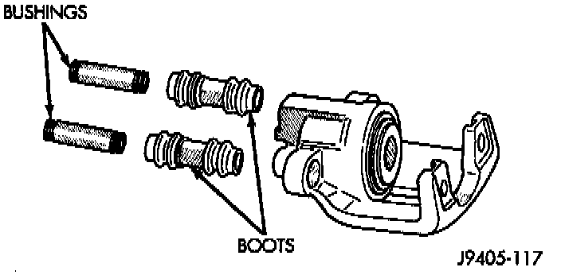
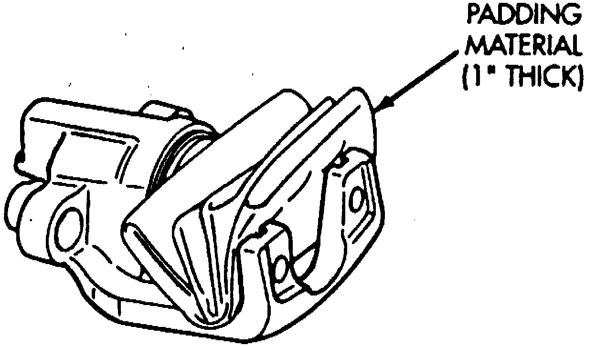
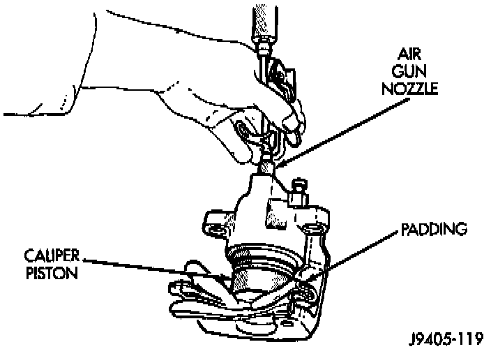
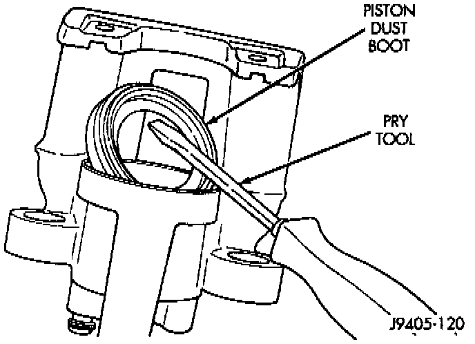
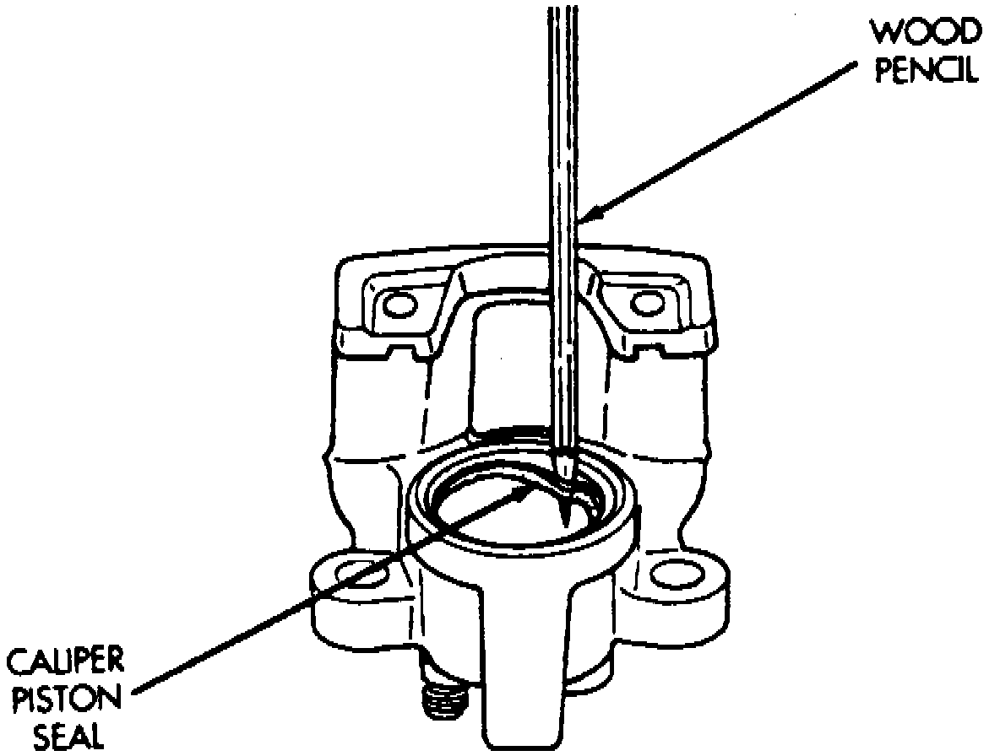

Disassembly
1. Remove caliper and brake shoes.
2. Remove mounting bolt boots and bushings from caliper.
Fig. 9 Caliper Piston Protective Cloth:

3. Pad interior of caliper with minimum, one-inch thickness of shop towels or rags. Towels are needed to protect caliper piston during removal.

4. Remove caliper piston with short bursts of low pressure compressed air. Direct air through fluid inlet port and ease piston out of bore.
WARNING: Do not blow the piston out of the bore with sustained air pressure. This could result in a cracked piston. Use only enough air pressure to ease the piston out. In addition, NEVER attempt to catch the piston as it leaves the bore. This could result in personal injury.

5. Remove caliper piston dust boot.
Fig. 11 Rear Caliper Piston Seal Removal:

6. Remove and discard caliper piston seal with pencil, or plastic tool. Do not use metal tools as they will scratch piston bore.